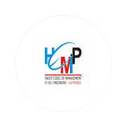

HEMIP · La PercéeMode hors ligne
Vous êtes hors ligne.
La page demandée n’est pas disponible sans connexion. Réessayez lorsque votre réseau sera rétabli.
Les inscriptions, connexions et envois de documents nécessitent une connexion. Les données saisies ne sont ni sauvegardées ni envoyées en arrière-plan : reconnectez-vous et soumettez votre formulaire à nouveau.
Formations précédemment consultées
- Génie pétrolier
- Génie logiciel
- Réseaux et télécommunication
- Maintenance industrielle
- Automatisation et informatique industrielle
- Droit des affaires et des entreprises
- Gestion logistique et transport
- Banque et finance des assurances
- Commerce international et transit
- Gestion finance et comptable
- Management des ressources humaines
Une filière s’ouvre hors ligne uniquement si elle a déjà été consultée avec une connexion.
HEMIP — Haute École de Management et d’Ingénierie, La Percée